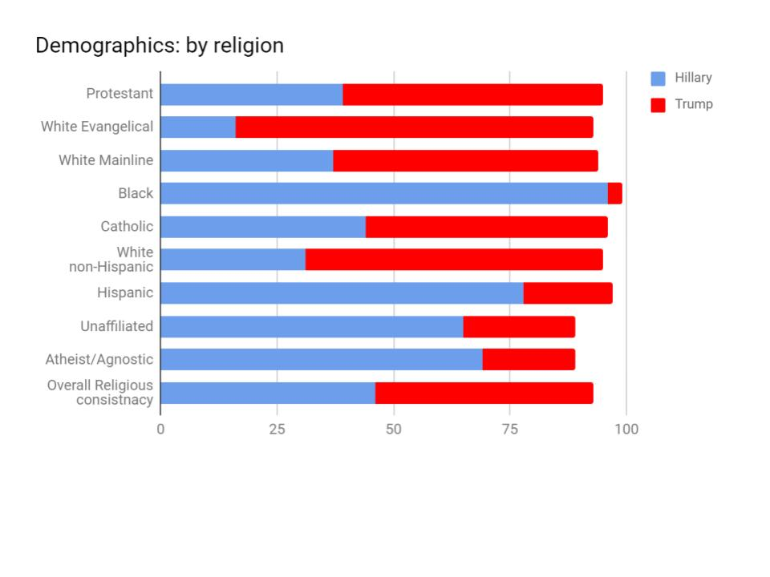
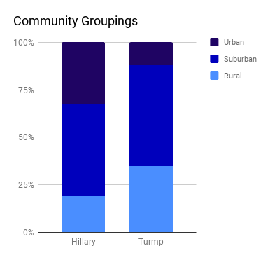
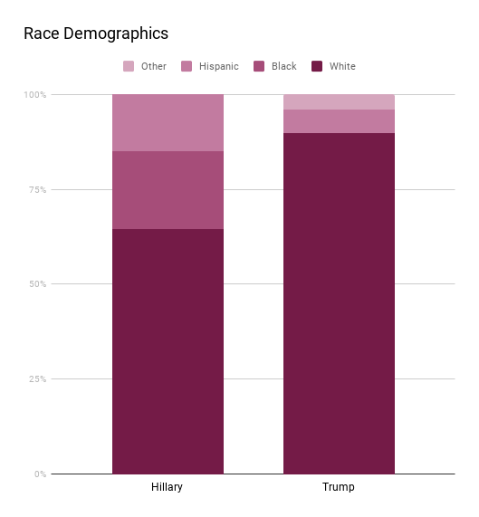

Within the whirlwind that was the 2016 Presidential Election, the the voter makeup can be broken down into
many different categories, We won't go into every single one but we'll go through a few
Religious Preferenace Amongst Voters

The Religion Demographics can be boiled down to how the two main candidates targeted their prospective audience
of voters. As shown in the graph presented above, you can see that Trump was favored by the majority of the religious masses.
Hillary was primarily favoured by minority gruops and people who are unaffiliated with any religios group or denomination.
Voter Community Grouping

Varying Education Levels
The Community Grouping graph shows the amount of votes that each candidate got from each community. Most people from Rural areas voted for
Trump, whereas most people from urban areas voted for Hillary.

Race Demographics


Built by Girls Who Code SIP Students